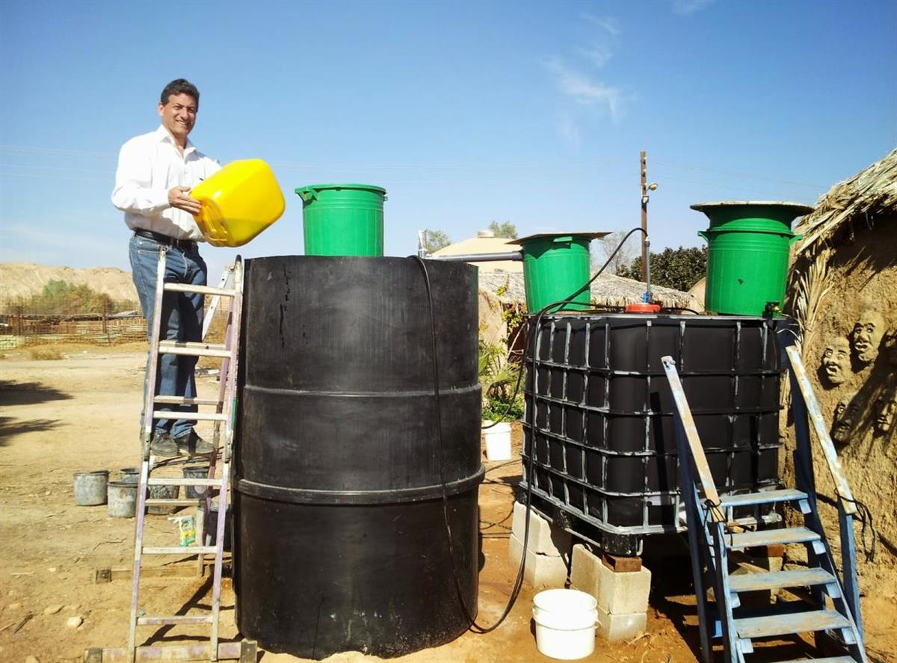
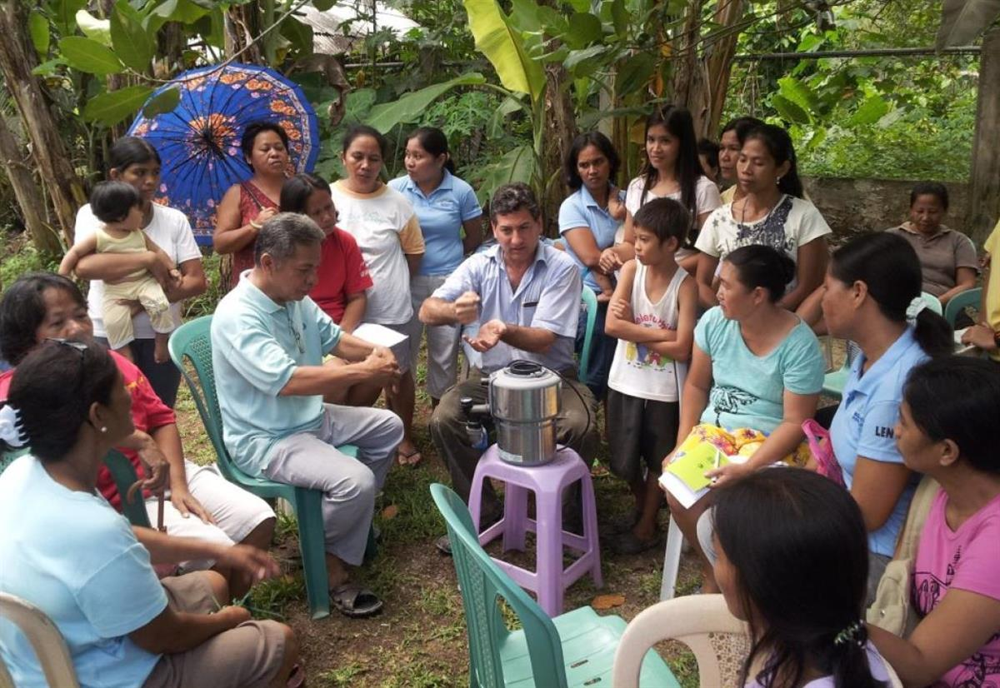
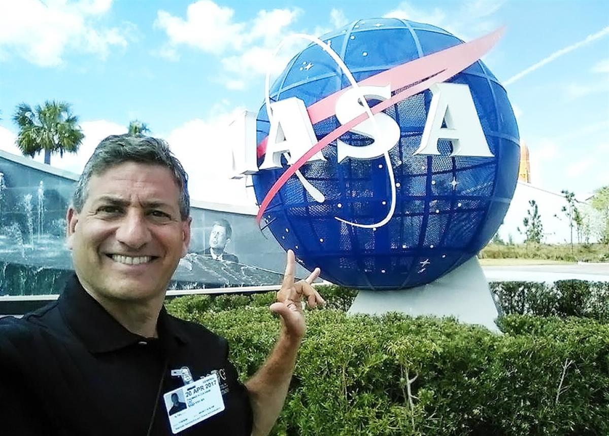

T.H. Culhane with a Solar Panel IMAGE CREDIT: T.H. CULHANE
T.H. Culhane, founder of the international nonprofit Solar C.³I.T.I.E.S., turns stored solar power from garbage into clean energy.
.Are banana peels the secret to sustainability? T.H. Culhane points out that solar energy is embedded in everything from avocado pits to aluminum cans, and it’s time we stop wasting our waste. His nonprofit Solar C.³I.T.I.E.S. (Connecting Community Catalysts Integrating Technologies for Industrial Ecology Solutions) helps families, corporations, and nations capture sunshine stored in organic waste and convert it into clean fuel and fertilizer. Biodigester fermentation tanks turn the waste into biogas, a form of clean solar energy that can power generators, refrigerators, air conditioners, cooking, and more. Fertilizer produced by the technology turns food back into food, nourishing urban rooftop gardens across the globe.

T.H. Culhane working on a biodigester IMAGE CREDIT: T.H. CULHANE“The sun doesn’t always shine, wind doesn’t always blow, and water doesn’t always flow,” notes Culhane. “Garbage, on the other hand, will always be there. This is the one technology that works everywhere on the planet at any scale using completely local materials. The ripple effects are incredible—it can eliminate indoor air pollution that claims the lives of four million women and children each year who burn kerosene, charcoal, and wood for cooking. Deforestation for firewood can end. Impoverished communities can be transformed. Diseases spread by pests attracted to garbage and poor sanitation can be wiped out since biodigesters kill 99% of pathogens from toilet waste.”
“Producing solar biogas tightly closes the loop,” he explains. “It turns the sun’s radiant energy back into food and fuel with the ultimate goal of eliminating all waste. We can absolutely get to a zero-waste future if everyone plays their part.”

T.H. Culhane teaching a group of locals how to build a small biodigester IMAGE CREDIT: T.H. CULHANEAnother perk? Families can easily build solar biodigesters themselves, and today the technology fuels domestic life in South Dakota basements, New York City rooftops, Maasai villages, Cairo kitchens and more than 150 other locations worldwide. A self-proclaimed ‘garbage missionary,’ Culhane has worked with communities, schools, hospitals, churches, ecolodges, and considers Solar C.³I.T.I.E.S. not just an NGO, but a movement. “My entire life as an educator has been about empowering people to solve their own problems themselves.”
Governments and corporations are on board too, says Culhane. “Germany has 15,000 giant biodigesters converting home waste, Sweden has an entire island producing so much biogas they’ve run out of garbage, and urban centers across the Middle East are building massive biodigesters with the goal of becoming the world’s cleanest cities. It isn’t rocket science…but it could fuel rockets.” In fact, Solar C.³I.T.I.E.S. has worked with NASA to develop the next generation of kitchens in space and has inspired engineers to look for ways to use the technology on the Space Station, the moon, and even Mars.

T.H. Culhane at NASA IMAGE CREDIT: T.H. CULHANE“Often when individuals hear the words ‘solar energy’ they think only of solar panels and assume it’s complicated, expensive, and out of reach. But when we explain how simple and effective solar biogas is, their jaws drop. They realize their daughters no longer have to risk snakebites or injuries to forage for wood from the bush. Children don’t have to contract illnesses from cholera. Crops once grown on farmland can thrive on rooftops. So while it’s exciting to see places where the private and public sector embrace the idea on a large scale, it’s still about making a difference one individual at a time. I’ll never forget helping one of our volunteers, a young Tanzanian goatherd, build a biodigester for his family. Sleeping on a straw mat, surrounded by goats, and solving a problem together so his mom won’t die of air pollution—I was in heaven. What could ever be better?”
SOURCE: National Geographic